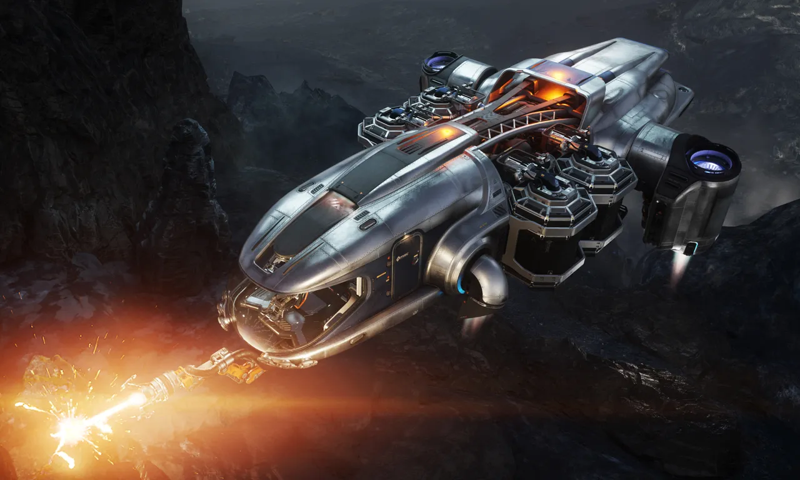

Vitesse quantique
—Mm/s
Vitesse de pointe
MINAGE & SALVAGE

© Cloud Imperium Rights LLC / Ltd.MINAGE SOLO
Nyx · Stanton · Pyro
Site communautaire indépendant du groupe Cloud Imperium. Site officiel de Star Citizen
—Mm/s
—Gm
—HP

Comparaison du module seul, sans l’équiper. Pour modifier ton montage, utilise les sélecteurs de modules à gauche. Hart et Comer sont des variantes dédiées au Salvation ; elles restent ici consultables. Le rendement réel dépend aussi du vaisseau et de l’alignement sur la coque.
| Élément | D’origine | Ta config. | Écart |
|---|
| Trajet | D’origine | Ta config. | Écart |
|---|
Distances à vol d’oiseau. Estimations hors alignement, portes de saut, attentes et détours. Les réservoirs et la vitesse SCM/NAV restent ceux du vaisseau.
Extraction des fichiers de Star Citizen 4.10.3, arrêtée à la révision indiquée. Les choix suivent la taille, les types et les attaches du montage d’origine. Les modules Baler interchangeables sont proposés selon la FAQ CIG. Les composants intégrés, les éléments S4 dédiés et les têtes et modules spécifiques du Salvation sont conservés.
La qualité des matériaux agit uniquement selon les courbes du blueprint répertorié. Une qualité 800 ne produit pas de bonus uniforme et n’augmente pas la capacité d’un pod dont la recette ne comporte aucun bonus de volume. Les prix et les lieux d’achat ne sont pas estimés.
La résistance affichée représente la capacité des boucliers, et l’intégrité d’une pièce ses points de vie. Elles ne prédisent pas à elles seules la survie du vaisseau. Le refroidissement et la puissance sont des capacités nominales, pas un bilan de consommation en situation.